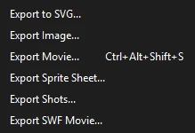
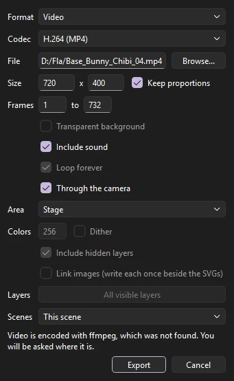
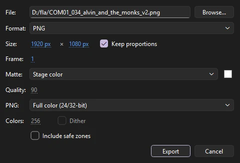

Output
Exporting
Exports render through the same drawing code as the stage, so what you see is what you get. All export commands are under .

Export Movie
Choose (Ctrl+Alt+Shift+S) to render a range of frames.

- Format
- What to make. See the table below.
- File
- Where to save it. Browse... picks a location.
- Size
- The output size in pixels. Keep proportions to match the stage's shape.
- Frames
- The first and last frame to export.
- Options
- Transparent background, Include sound, and Loop forever, where the format supports them.
- Codec
- For video: H.264 (MP4) to watch and share; ProRes 422 HQ (MOV) for editing; ProRes 4444 (MOV), which keeps a transparent background, for compositing. ProRes carries the sound as uncompressed PCM.
- Area
- Stage, or Everything: all the artwork on the frames, wherever it is, the pasteboard too. The size is then the stage's scale applied to that larger area.
- Colors
- For a GIF, how many colors each frame may use (2 to 256), and Dither to mix them so gradients stay smooth in few colors.
- Layers
- For a sequence per layer, which layers get one. All visible layers until you choose.
- Scenes
- In a document with more than one scene: This scene; All scenes, one after another into one file, the frame range being every frame of every scene; or Each scene to its own file, named after the file and the scene (
movie_Intro.mp4).
| Format | Produces |
|---|---|
| Video (MP4, H.264) | An MP4, or MOV if you name the file .mov, with the soundtrack mixed in as AAC audio. Good quality, plays everywhere. |
| PNG Sequence | One numbered image per frame (name0001.png, name0002.png...), optionally with a transparent background. Ideal for compositing and editing software. |
| Animated GIF | A GIF, looping forever or playing once, with its own color palette for each frame. |
| PNG Sequence per Layer | A separate PNG sequence for every visible layer, with masks applied, for compositing layers separately. |
| Sound (WAV) | The mixed soundtrack on its own. |
| SVG Sequence | One numbered SVG per frame, its shapes, strokes, gradients and text kept as vectors. Include hidden layers draws layers you have hidden; Link images writes each bitmap once as a file beside the SVGs (name_image_….png) rather than inside every frame. |
In every export, movie clips play their own animation, guide layers are left out, and locked layers are included.
About ffmpeg
Video export uses ffmpeg, a free video encoder. If it is installed and on your path, Phoenix finds it. If not, Phoenix asks you to locate it the first time you export video, and remembers where it is. Other formats do not need it.
Export Image
renders a single frame.

- Format
- PNG, JPEG or GIF.
- Size
- Any size, with proportions kept if you like.
- Frame
- Which frame to render.
- Matte
- The background: the stage color, transparent (not for JPEG), or any color.
- Quality
- For JPEG, from 0 to 100. The default is 90.
- PNG
- Full color, or 8-bit: a palette of at most 256 colors, a smaller file for flat-colored art. Transparency is kept.
- Colors
- For an 8-bit PNG or a GIF: how many colors the palette has, and Dither to mix them so gradients stay smooth.
Export to SVG
writes the current frame as an SVG file, which scales cleanly for print and the web. Hidden layers are left out and images are embedded. Filters and masks, which SVG cannot express the same way, are included as images.
Exporting without opening Phoenix
Every movie and image export can also run from the command line, for batch jobs and render scripts. See Command line.
Sprite sheets, a render queue, and export settings saved with the document.
Compositing passes
For compositing in another program, choose a passes format in File > Export > Export Movie:
- Compositing Passes (PNG) writes three numbered sequences: line (the strokes alone), color (the fills, text and bitmaps alone) and matte (the coverage of everything, white on black). The line and color passes have no background.
- Multi-layer EXR writes one OpenEXR file a frame holding the whole picture as its main layer and the passes as layers named
line,colorandmatte, in linear light with premultiplied alpha, as Nuke, After Effects, Fusion and Blender expect.
From the command line, add --passes or --exr to Phoenix render (see Command line).